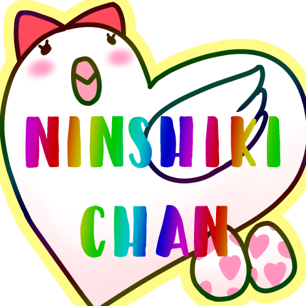

OBS 連携ガイド
音声認識字幕ちゃん v2 の字幕を OBS に映す
① OBS で WebSocket を有効にするツール → WebSocket サーバー設定（OBS 28 以降に内蔵）
1
メニュー「ツール」
→「WebSocket サーバー設定」
2
「WebSocket サーバーを有効にする」に ✔
ポートは 4455 のまま
3
「パスワードを表示」で控える
認証なしにしてもOK
自動シーンスイッチャー
自動設定ウィザード
出力タイマー
WebSocket サーバー設定
スクリプト
WebSocket サーバー設定
WebSocket サーバーを有効にする
サーバーポート4455
✔認証を有効にする
サーバーパスワード••••••••••••
パスワードを表示OK
② 字幕ちゃんで OBS に接続「OBS連携」タブ → パスワード → 「OBSに接続」
1
「OBS連携」タブを開く
方法A の欄
2
パスワードを貼り付け
WebSocket は ws://localhost:4455 のまま
3
「OBSに接続」
右上が「OBS 接続中」になれば成功

③ 「現在のシーンに字幕を追加」ブラウザソース「jimakuChan 字幕」が自動で追加されます
シーン
シーン 1
シーン 1
ソース
🌐 jimakuChan 字幕 🎮 ゲームキャプチャ 📷 カメラ
🌐 jimakuChan 字幕 🎮 ゲームキャプチャ 📷 カメラ
音声ミキサー
🎤 マイク
🎤 マイク
あとは話すだけ背景は透過（クロマキー不要）．見た目の変更もその場で OBS に反映
🎬 OBS プレビュー
縁取りボックスネオンシャドウ
方法B：ウィンドウキャプチャ＋クロマキーWebSocket が使えない／古い OBS のとき
緑背景の窓を OBS で取り込む
1
「表示モード」ボタン
設定が隠れて字幕だけの緑画面に（クリックで戻る）
2
OBS：ソース → ウィンドウキャプチャ
その Chrome ウィンドウを選ぶ（次回は同じ URL を開くだけ）
3
フィルタ → クロマキー（緑）
背景が抜けて字幕だけ残る
クロマキーで緑を抜く
エフェクトフィルタ
🟩 クロマキー
🟩 クロマキー
色キーの種類
緑
緑
類似性
400
400
映らないときのチェック
1
ブラウザソースを右クリック →「対話」
ページが表示されているか確認．真っ白なら URL（https の証明書／file://）を疑う
2
「表示されていないときにソースをシャットダウン」を OFF
ON だと非表示中に字幕が届かない
3
字幕ちゃんの設定タブは閉じない
認識は設定画面のタブで動いています（最小化は OK）
4
全画面ゲーム中に止まるなら起動ファイル
「保存・起動」タブの .bat / .command で Chrome の省電力を回避
音声認識字幕ちゃん v2
sayonari.github.io/jimakuChan/v2/
開発者：さぁたん（構想，助言）／ さよなりω．西村良太（実装）
🎤